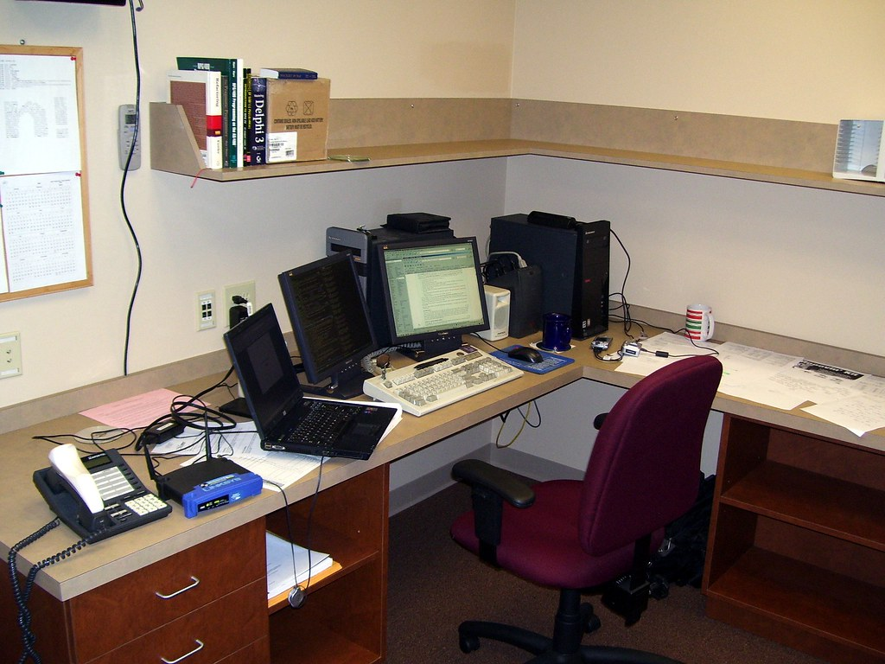
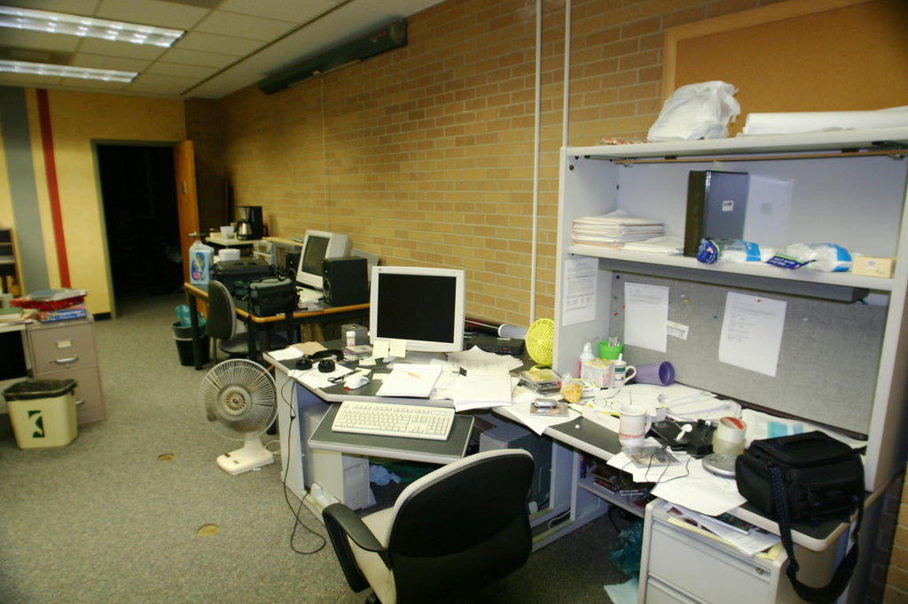

Use Microsoft Copilot for everyday work as a beginner. This guide covers Windows 11, clear prompts, Word, Excel, Outlook, and the free plan.
You use Microsoft Copilot by opening it in Windows 11 or in a Microsoft app and typing a clear request. You learn how to use Microsoft Copilot for beginners with simple prompts that draft emails, sum up documents, and plan your day. You need only a Microsoft account to start.
Most beginners type a vague request and they accept the first answer without checking it. They paste private details into the chat and they skip the check.
You finish this guide with a daily Copilot habit that saves time on emails, documents, and plans. You gain the skill to write clear prompts and check every answer with care.

You open Copilot on Windows 11 for beginners by clicking the Copilot icon on the taskbar. You learn how to use Microsoft Copilot for beginners by signing in with your Microsoft account first. You check the welcome screen and you confirm that your name shows at the top.
One account keeps your chats, your files, and your settings in one place. You avoid signing in with a new account each time and you keep your history easy to find. You sign out on a shared device and you protect your chats from other people.
Ayesha from Lahore shows this idea in action with a Copilot sign in that she finishes in two minutes. She clicks the icon on her taskbar and she picks her daily Microsoft account at once. She pins Copilot to the taskbar and she opens it each morning before her classes.
You write a clear prompt when you learn how to use Microsoft Copilot for beginners with one goal in each message. You name the task, the audience, and the length in plain words. You add Copilot prompts for beginners by testing short prompts first and keeping the ones that work.
Clear prompts work because Copilot follows firm guidance better than vague wishes. You name the result you want and you add one example when the task feels new. You ask for a shorter version when the answer runs long and you check the facts before you use them.
Bilal from Karachi shows this idea in action with a prompt for a shop message in Urdu and English. He asks Copilot for a short polite reply and he names the customer problem in one line. He copies the best reply into his chat and his customer answers within the hour.
You use Copilot in Word, Excel, PowerPoint, and Outlook to speed up real daily work. You ask Copilot in Word to draft a letter from a few short points in your own words. You ask Copilot in Excel to explain a table and you ask Copilot in PowerPoint to build a clean slide outline.
This link saves time because Copilot reads your own files instead of guessing. You find an old bill or a class note in seconds and you keep the facts straight. You never share a private file in a chat and you check each draft for wrong names or dates.
Sana from Islamabad shows this idea in action with a Word file that holds her class notes. She asks Copilot to list the main points from the file and she checks each point against her own notes. She drafts a short email to her teacher in Outlook and she sends it only after she reads it twice.
You plan your day with Copilot by listing your tasks and asking for a simple order. You name the time you have and the task that needs the most focus. You ask Copilot for a short plan and you move the hard task to the hour when you work best.
A clear plan works because it turns a long list into a short order you can follow. You finish the hard task first and you feel calm about the rest of the day. You check the plan at noon and you move any missed task to the next free hour.
Usman from Faisalabad shows this idea in action with a morning plan for his shop and his studies. He lists five tasks and he asks Copilot to order them by time. He finishes the shop orders first and he studies in the evening without stress.
You check the Microsoft Copilot free vs paid plans before you rely on Copilot for heavy work. You read the free limit for chats and features and you plan your tasks inside that limit. You upgrade only when you use Copilot every day and the free plan stops your work.
Safe use works because you keep private details out of the chat and you check each answer. You never paste passwords, bank details, or a full address into Copilot. You treat every answer as a draft and you confirm the facts before you act on them.
Hira from Rawalpindi shows this idea in action with a free plan that covers her study tasks each day. She saves her best prompts in a note and she reuses them for new homework. You read a short guide about AI tools next best free AI tools for students and you pick one tool for each task you do.

You use Microsoft Copilot as an AI helper that answers questions, drafts messages, and explains ideas in plain words. You open it on Windows 11 or inside a Microsoft app with your Microsoft account. You start with the free plan and you learn its strengths with short daily tasks.
You use the free plan of Copilot for daily tasks and you check its limits before heavy work. You read the Microsoft Copilot free vs paid plans and you compare the features with care. You upgrade only when you use Copilot every day and the free plan stops your work.
You click the Copilot icon on the taskbar and you sign in with your Microsoft account. You use Copilot on Windows 11 for beginners by pinning the icon so it stays easy to reach. You open it each morning with one click and you start with one short prompt.
You name the task, the audience, and the length in plain words and you keep one goal in each message. You add Copilot prompts for beginners by testing short prompts first and keeping the ones that work. You ask for a shorter version when the answer runs long.
You use Copilot in Word, Excel, PowerPoint, and Outlook to speed up real daily work. You ask Copilot to draft a letter or explain a table from your own files. You check each draft for wrong names or dates before you use it.
You list your tasks and you ask Copilot for a simple order that fits your time. You name the task that needs the most focus and you move it to the hour when you work best. You check the plan at noon and you move any missed task to the next free hour.
You keep passwords, bank details, and a full address out of every chat with Copilot. You treat every answer as a draft and you confirm the facts before you act on them. You sign out on a shared device and you protect your chats from other people.
You learn Copilot in a few days of short daily practice with one prompt each day. You save your best prompts in a note and you reuse them for new tasks. You build strong habits over weeks and you keep improving with every new prompt.
You sign in with your Microsoft account and you write clear prompts that give useful answers. You use Copilot in Word, Excel, and Outlook and you plan your day with short drafts. You learn how to use Microsoft Copilot for beginners one prompt at a time and you keep your chats safe with care.
Open Copilot today and write your first clear prompt tonight.